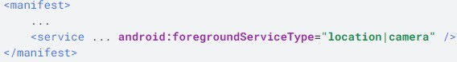
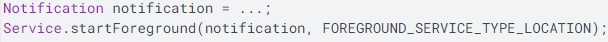

Servicios
04 de Enero de 2021
Descripción general de los servicios

Estos son los tres tipos diferentes de servicios:
Primer plano:
Segundo plano:
Enlace
Diferencia entre un servicio y un subproceso
Conceptos básicos
Métodos de devolución de llamada más importantes que debes anular:
onStartCommand()
Administrar el ciclo de vida de un servicio
El ciclo de vida del servicio (desde el momento en que se crea hasta que se destruye) puede seguir dos rutas de acceso diferentes:Un servicio iniciado
Un servicio enlazado

Servicos en primer plano
Solicitar el permiso de servicio en primer plano
Iniciar un servicio en primer plano
Quitar un servicio del primer plano
Declarar tipos de servicio en primer plano
Ejemplo de uso de la ubicación y la cámara:
Si el servicio en primer plano solo necesita acceso a un subconjunto de los tipos declarados en el manifiesto, puede limitar el acceso del servicio mediante la lógica del siguiente fragmento de código:
Restricciones durante el uso
Un servicio en primer plano mientras se ejecuta en segundo plano,el servicio tiene las siguientes restricciones de acceso:
- A menos que el usuario haya concedido el permiso de ACCESS_BACKGROUND_LOCATION a la aplicación, el servicio no puede acceder a la ubicación.
- El servicio no puede acceder al micrófono ni a la cámara.
Un servicio en primer plano mientras se ejecuta en primer plano, el servicio tiene las siguientes asignaciones de acceso:
- Si el usuario ha concedido el permiso ACCESS_BACKGROUND_LOCATION a la aplicación, el servicio puede tener acceso a la ubicación todo el tiempo. De lo contrario, si el usuario ha concedido el permiso de ACCESS_FINE_LOCATION o ACCESS_COARSE_LOCATION a la aplicación, el servicio tiene acceso durante su uso a la ubicación.
- Si el usuario ha concedido el permiso CAMERA a la aplicación, el servicio tiene acceso durante su uso a la cámara.
- Si el usuario ha concedido el permiso de RECORD_AUDIO a la aplicación, el servicio tiene acceso durante su uso al micrófono.
Descripción general de los servicios vinculados
Un servicio vinculado es el servidor de una interfaz cliente-servidor. Permite que los componentes (como actividades) se vinculen con el servicio, envíen solicitudes, reciban respuestas y establezcan comunicaciones entre procesos (IPC). Un servicio vinculado, por lo general, solo está activo mientras le presta servicio a otro componente de la aplicación y no se ejecuta en segundo plano indefinidamente.
Conceptos básicos
Un servicio vinculado es una implementación de la clase Service que permite que otras aplicaciones se vinculen e interactúen con él. Para vincular un servicio, debes implementar el método de devolución de llamada onBind(). Este método muestra un objeto IBinder que define la interfaz de programación que los clientes pueden usar para interactuar con el servicio.
Cómo crear una vinculación con un servicio iniciado
Puedes crear un servicio que ya se haya iniciado y vinculado. Es decir, el servicio se puede iniciar llamando a startService(), lo que permite que el servicio se ejecute indefinidamente, y también puedes permitir que un cliente establezca una vinculación con el servicio llamando a bindService(). El sistema Servicios lo destruirá cuando se desvinculen todos los clientes. En su lugar, debes detener explícitamente el servicio llamando a stopSelf() o stopService() .
Cómo crear un servicio enlazado
Al crear un servicio que proporciona la capacidad de crear una vinculación, debes proporcionar un IBinder que contenga la interfaz de programación que los clientes pueden usar para interactuar con el servicio. Puedes definir la interfaz de las siguientes tres maneras:
- Extender la clase Binder
- Utilizar un objeto Messenger
- Utilizar AIDL
Cómo crear una vinculación con un servicio
Los componentes de la aplicación (clientes) pueden establecer una vinculación con un servicio llamando a bindService() . Luego, el sistema Android llama al método onBind() del servicio, que muestra un IBinder para interactuar con él. La vinculación es asíncrona, y bindService() se muestra inmediatamente sin mostrarle el IBinder al cliente. Para recibir el IBinder, el cliente debe crear una instancia de ServiceConnection y pasarla a bindService() . ServiceConnection incluye un método de devolución de llamada al que el sistema llama para enviar el IBinder.
Para establecer una vinculación con un servicio desde tu cliente, debes hacer lo siguiente:
-
Implementa ServiceConnection.
Tu implementación debe anular dos métodos de devolución de llamada:
-
onServiceConnected()
-
onServiceDisconnected()
-
-
Cuando el sistema llama a tu método de devolución de llamada onServiceConnected() , puedes comenzar a realizar llamadas al servicio usando los métodos definidos por la interfaz.
-
Para desconectarte del servicio, llama a unbindService().
Llama a bindService() y pasa la implementación de ServiceConnection.